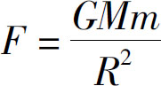

电影《夏洛特烦恼》中有这样一个场景：夏洛一觉醒来，发现回到了十几年前的教室里，之前的一切都是在做梦．其实我们在生活中也偶尔会有这样的体验：在某个时刻你会突然怀疑：“我现在是不是在做梦呢？”那么，我们怎样判断自己是不是在做梦？
有人说咬咬手指头试试疼不疼，其实这个方法一点都不灵，如果你真是在做梦，咬自己的手指头，那还真能感觉到疼痛．还有人说，像《盗梦空间》里的“小李子” (2) 一样给自己做一个小陀螺，如果小陀螺不倒就证明自己在做梦．其实这就更行不通了，因为《盗梦空间》的主角的办法是用来判断自己是不是在别人设计的梦里，而如果是自己主动做的梦那就没办法识别了．有人说，等着就行了，如果是在做梦一定会醒来，而且时间不会很长．那么，万一我们是躺在床上一动不动的植物人呢？我们就会持续地做一个很长的梦，所以通过时间长短来判断是不是在做梦，也是无效的．
那么，究竟怎么样才能知道自己是不是在做梦呢？答案是，没有任何办法！这个答案可能让你觉得不敢相信，甚至会摧毁你的信心．因为，如果周围的一切都是在梦中，那么人生就变得毫无意义了．但没办法，这就是事实．我们不但没有办法判断自己是不是正在做梦，还没有办法判断自己是不是一个活人．我们有可能是个被连接了很多电线的植物人，有可能是一个全自动的机器人，还有可能是一个计算机游戏里的虚拟人物，当然，我们也有可能是个活生生的人．这一切都是有可能的，但又都不能百分之百确定．
……
让我们结束这些惊悚的想象，先来看一道数学题：
小明有1个苹果，妈妈又为他买了1个苹果，小明现在有几个苹果？
我们上幼儿园的时候都知道答案是2个．但是你见过小明吗？你见过小明的妈妈吗？你见过他的苹果吗？你凭什么认为他现在有2个苹果？但是我们就是确信，丝毫都不怀疑．这难道不奇怪吗？我们几乎天天和父母在一起，但是却没有任何办法证明他们就是自己的父母；我们根本不知道小明是谁，但仍然知道他有2个苹果，为什么？
请注意，我不是在讲1＋1为什么等于2，我讲的是为什么我们会对1＋1＝2如此的确信．不仅在真实的世界里1＋1＝2，在镜中的世界里也是1＋1＝2，在电脑游戏里1＋1＝2，甚至就连我们做梦的时候，也不会梦到一个1＋1不等于2的场景．为什么这个世界的一切都不可知，而数学却让我们如此确信？很简单，因为数学是从我们已知的万事万物中抽象总结出来的最基本、最稳定、最精确、最具有普遍意义的知识．正因为如此，数学才如此迷人；正因为如此，才会有无数的智者为之奋斗．
人的生命是有限的，而真理是永恒的．历史上，有无数的智者通过数学的伟大见证自己生命的伟大，通过数学的魅力讲述自己人生的精彩．鲁道夫的墓碑上记载的是圆周率，阿基米德的墓碑上记载的是与球外切的圆柱，高斯的墓碑上记载的是正十七边形，而丢番图则在墓碑上用代数题描述了自己的年龄．无数的古圣先贤已经用数学为我们搭建了智慧的阶梯，我们要站在他们的肩膀上，为自己有限的生命找到永恒的意义．是的，数学是人类智慧的精华，数学是现代科学的基础．
今天的世界：
是一个数学定律在维持着宇宙的秩序，它就是引力定律

；是一个数学方程在保障着世界的安全，它就是质能方程E＝mc2 ；
是一个数学公式在维护着经济的稳定，它就是货币公式MV＝PT ．
听到这里，你可能会说了，我知道数学很伟大，但是数学太难了，学数学得有天赋才行，数学好的人那都是天生的神童，一般人哪学得会．那么，接下来就请你思考这样一个问题：你认为数学考100分的人，比考50分的人聪明多少倍呢？